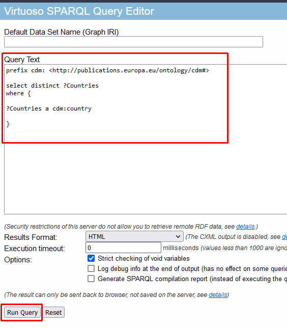
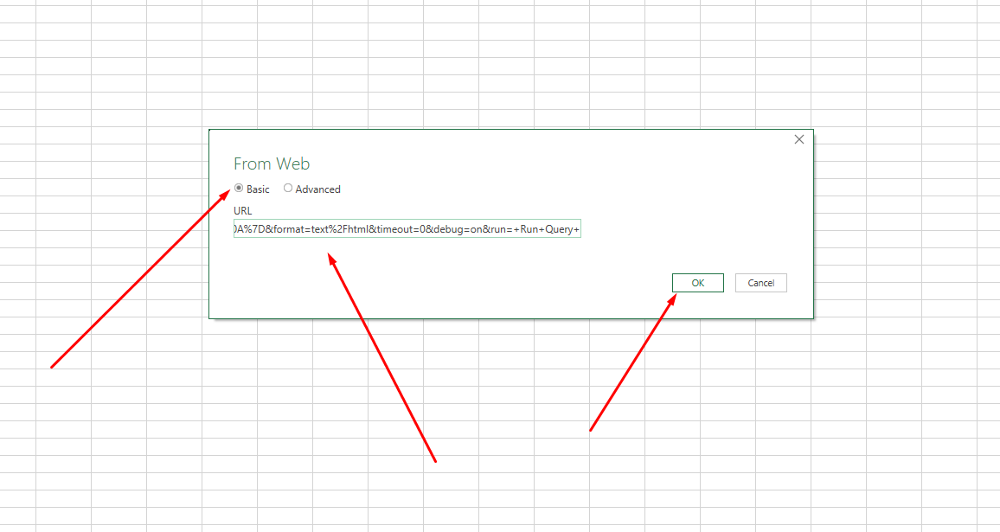
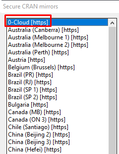
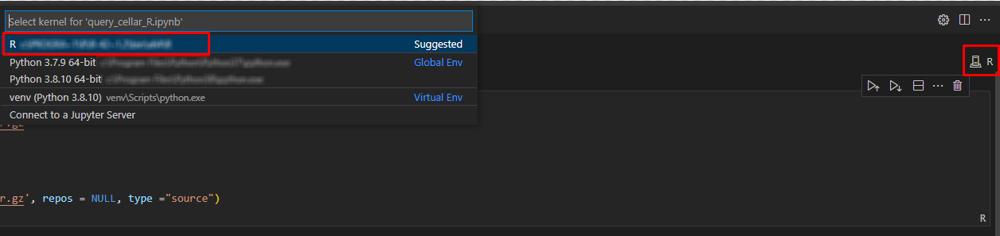
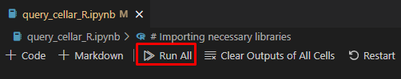
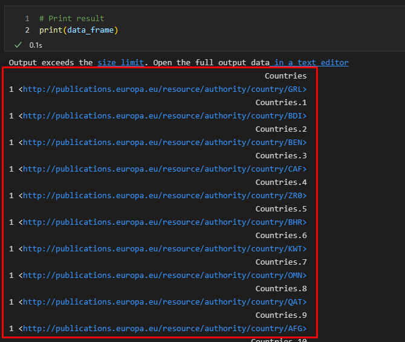

Using procurement data
This page explains how to use procurement data accessed from Cellar with Microsoft Excel, Python and R. There are different ways to access TED notices in CELLAR and use the data. The methods described below work with TED notice and other type of semantic assets.
We use a sample SPARQL query which returns a list of countries. The users shall use TED specific SPARQL queries to fetch needed data.
Note: Jupyter Notebook samples are explained with assumption that a code editor is already prepared. For example VS Code or Pycharm, or Jupyter server. Examples are explained using Visual Studio Code.
Microsoft Excel
This chapter shows an example of getting data from Cellar using Microsoft Excel.
-
Prepare link with necessary query:
-
Insert query
Example query:
prefix cdm: <http://publications.europa.eu/ontology/cdm#>
select distinct ?Countries
where {
?Countries a cdm:country .
}-
Push the “Run Query” button

-
Copy entire link of the result

-
Access result table via Excel:
-
Click on Data → From Web button
-

-
In appeared window insert result link then press OK:

-
In result window select necessary table, press load:

Jupyter Notebook - Python
This chapter shows an example using the Jupyter Notebook in Python. The Jupyter Notebook is an application for creating and sharing computational documents. Python represents a programming language for writing computational documents. To realize the proposed scenario, it is necessary to install the special tools and use the Python code that will perform a query to the cellar and display the results in tabular form (Working with Jupyter Notebook).
To run Python sample:
-
Download Jupyter Notebook file:
-
Download & Install Python 3.8:
-
Open Jupyter Notebook file with code editor (VS Code):
-
In code editor, select interpreter for Python that was installed
Example in VS Code:

-
Install dependencies:
-
Use OS command line and type:
pip install ipykernel sparqlwrapper pandas
-
-
Run Cells (example in VS Code):

If all works good, on last output cell we can see results:

Jupyter Notebook - R
This chapter shows an example using Jupyter Notebook in R language. R is software environment for statistical computing and graphic representation. In this case, R represents the programming language for writing notebook documents. To realize the proposed scenario, it is necessary to install the special tools (Running R Jupyter Notebooks) and use the R code that will perform a query (SPARQL with R) to the cellar and display the results in tabular form.
To run R sample:
-
Install & install R language:
-
Windows 64bit: download
-
-
Download Jupyter Notebook file: https://github.com/OP-TED/ted-rdf-conversion-pipeline/blob/main/notebooks/query_cellar_R.ipynb
-
Download SPARQL package archive and put in same folder as Notebook file: download SPARQL
-
Install IRKernel:
-
Run R in OS command line and type:
install.packages("IRkernel") install.packages('RCurl') install.packages('XML')
-
In appeared window, select first mirror and press OK: 
-
After installation is completed, type:
IRkernel::installspec()
-
Open Jupyter Notebook file in code editor;
-
Select R interpreter;

-
Run all cells

-
After running, after last cell we can see results:

References
-
“Working with Jupyter Notebooks in Visual Studio Code.” n.d. Visual Studio Code. https://code.visualstudio.com/docs/datascience/jupyter-notebooks
-
“Running R Jupyter Notebooks in VS Code.” n.d. Practical Data Science. https://www.practicaldatascience.org/html/jupyter_r_notebooks.html
-
“SPARQL with R.” 2013. R-bloggers. https://www.r-bloggers.com/2013/01/sparql-with-r-in-less-than-5-minutes/https://www.r-bloggers.com/2013/01/sparql-with-r-in-less-than-5-minutes/]